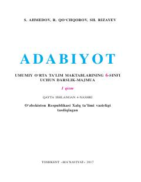

A16-sinf o'quvchilari uchun mo'ljallangan adabiyot fanidan darslik-majmua.
Ushbu darslik umumiy o'rta ta'lim maktablarining 6-sinf o'quvchilari uchun mo'ljallangan bo'lib, o'zbek va jahon adabiyoti namunalarini o'z ichiga oladi. Kitob o'quvchilarda badiiy asarlarni tahlil qilish ko'nikmalarini shakllantirish va ma'naviy dunyoqarashini boyitishga xizmat qiladi.